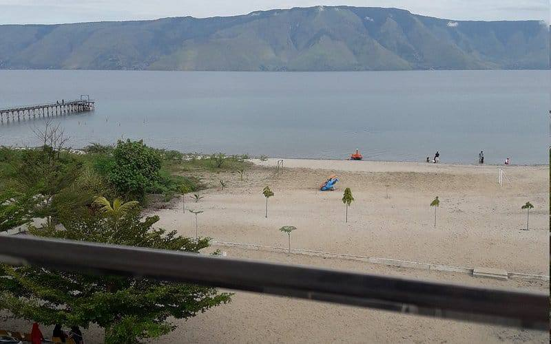

Menampilkan 12 destinasi

Bukit Holbung
Bukit berundak dengan pemandangan spektakuler Danau Toba yang sering disebut Bukit Teletubbies.

Air Terjun Efrata
Air terjun indah melebar seperti tirai yang tersembunyi di perbukitan hijau Samosir.

Bukit Sibea-bea
Ikon baru Samosir dengan jalan berkelok eksotis dan patung Yesus tertinggi menghadap danau.

Pantai Pasir Putih Parbaba
Keunikan pantai berpasir putih eksotis di tepi danau air tawar dengan berbagai wahana air.

Menara Pandang Tele
Titik tertinggi untuk menikmati panorama kawah Gunung Toba purba dari ketinggian.

Desa Wisata Tomok
Pintu gerbang budaya, pusat souvenir, dan pementasan magis Tari Sigale-gale.

Makam Raja Sidabutar
Situs peninggalan megalitik makam raja-raja Batak kuno yang berusia ratusan tahun.

Museum Huta Bolon Simanindo
Eks Rumah Bolon peninggalan Raja Sidauruk, tempat melihat pertunjukan Tari Tor-tor asli.

Desa Wisata Ambarita
Kampung tradisional yang menyimpan sejarah kelam hukum adat masa lampau Suku Batak.

Batu Kursi Persidangan Siallagan
Situs pengadilan batu di bawah pohon suci Hariara, tempat eksekusi raja-raja zaman dahulu.

Bukit Indah Simarjarunjung
Spot foto hits dan kekinian yang menawarkan lanskap biru membentang Danau Toba dari atas bukit.

Air Terjun Sipiso-Piso
Salah satu air terjun tertinggi di Indonesia yang langsung bermuara ke arah kaldera Danau Toba.